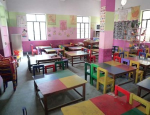
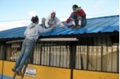
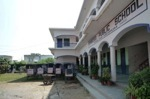
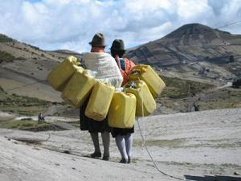
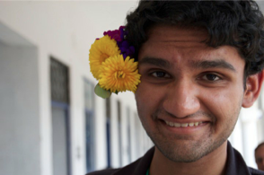

Anuual Gala on November 15th!
The Carnegie Mellon University Chapter of Engineers Without Borders will host its Annual Gala on November 15th in the Singleton Room of Roberts Engineering Hall at CMU. The evening will begin at 6:00 PM with a reception featuring the work of each Engineers Without Borders program. Proceeds will help fund our ongoing international and Pittsburgh-based initiatives.Please RSVP by emailing ewb.cmu.fundraising@gmail.com
Tickets are $45 for professionals and $20 for students. They can be paid for in cash at the door.
We thank you for your support!


Welcome to the Carnegie Mellon University chapter of the non-profit humanitarian organization Engineers Without Borders. We are a group of students dedicated to understanding the challenges that face humanity today, and creating socially-conscious and environmentally sustainable technologies to improve quality of life for local, national, and international communities. Visit the national chapter website to find out more.
Sign up for the Engineers Without Borders email list:
Follow @EWB_CMU
About Us
Our Mission
EWB-USA supports community-driven development programs worldwide by collaboratingwith local partners to design and implement sustainable engineering projects, while creatingtransformative experiences and responsible leaders.
The Carnegie Mellon Chapter of EWB-USA is dedicated to understanding the challenges that face humanity today and implementing socially conscious and environmentally sustainable technologies to improve quality of life for local, national, and international communities.
Our History
The Carnegie Mellon Chapter of Engineers Without Borders-USA was established in 2008, and has been growing strong ever since. One of the fastest growing engineering clubs on campus, we started as just a handful of students interested in similar things but now boast a chapter size of 70 active members. And we don't plan on slowing down.
Current Board Members
| Current Board Members | ||
|---|---|---|
| President | Craig Boman | president@cmuewb.org |
| Executive Vice President | Stephanie Emore | execvp@cmuewb.org |
| Vice President of Finance | David Sparks | finance@cmuewb.org |
| Vice President of Projects | Sara Johnson | projects@cmuewb.org |
| Vice President of Public Relations | Yeshar Hadi | pr@cmuewb.org |
| Fundraising Chair | Tushita Gupta | fundraising@cmuewb.org |
| Grants and Sponsorships Chair | Julia Tucker | sponsorship@cmuewb.org |
| Treasurer | Alex Lucci | treasurer@cmuewb.org |
| Webmaster | Oscar Bezi | webmaster@cmuewb.org |
| Faculty Advisors | Kelvin Gregory | advisor@cmuewb.org |
| Mel Siegel | advisor@cmuewb.org | |
|
If you have any questions, comments or would like to |
||
Calendar
Projects
Energy in Zimbabwe
The team plans to carry out an alternatives analysis during the fall 2015 semester to identify the most cost-effective and sustainable alternative energy source to power the street lights (current options are solar, hydropower, biogas, and grid-charged batteries). Then, design work will be done in the spring 2016 semester, with the goal of traveling for implementation in August or December 2016.
Nyadire is a Methodist Mission complex located three hours northeast of Harare, Zimbabwe’s capital. The community is home to about 3000 people and a hospital, orphanage, and a teacher’s college. Electricity is provided by the Zimbabwe Electrical Supply Author.
Coffee Project
The Coffee Project is a research initiative that began last year. After completing an initial analysis of the market and agricultural process, the team made a trip last August to Ecuador to interview coffee growers and gather information. This past semester, the team organized the data and have identified several possible areas to make the growing process more efficient and profitable. One idea the team has investigated- the brewing of “coffee alcohol” using byproducts of the coffee-making process and ingredients locally available to the farmers. The project team plans to continue to research this and several other ideas in the coming months.
PET Thatch
PET Thatch is an ambitious joint effort between our chapter and the Reuse Everything Institute, a local non-profit. The project’s mission is to develop an automated process to construct thatch roofs and other products from recycled plastic bottles. The process will then be transplanted into communities in developing nations, where local entrepreneurs will take over the venture.
After a two-week trip to Ecuador where the team constructed a new thatch roof for a national park and collected data on recycling habits, the team has reorganized into four groups: cutting, fusing, decontouring, and roof design.
Cutting
The cutting section of the PET Thatch project aims to create a method to cut off the tops and bottoms of the bottles and then cutting the bottles into strips. The focus is to make this process automated and efficient, while keeping it safe. In the past semester, they have created a prototyping model for a cutting chute, sketched out a plan for strip cutting rollers, and are in the process of testing cutting blades.
Fusing
As part of the PET Thatch project, the fusing section is responsible for connecting the individual plastic strips from the cutting section into longer plastic thatch for the roof design section. The main concerns of the section are to make the fusing process easy to learn, affordable, and effective. Currently, the team is researching alternative methods of fusing and have determined three effective mechanical alternatives to ultrasonic fusing.
Decontouring
Decontouring is the process by which ridges and deformations are removed from surfaces. The decontouring team of the PET Thatch project is currently developing a device to accomplish this task. The team has finalized a design utilizing a heated roller system and plan on constructing this system in the upcoming weeks.
Roof Design
This groups looks at the holistic system by creating ideas in manufacturing and application while identifying what end product will perform best through prototypes and experimentation. In the past few months, the team has created a test frame to build model roofs and prototyped new methods of assembling plastic roof tiles.
Tingo Pucará Development
Since 2008, EWB-CMU, along with EWB members from the University of Pittsburgh and the Pittsburgh Professional chapters, have partnered with the community of Tingo Pucará. This indigenous community in the Ecuadorian Andes highlands wants to boost their quality of life through better access to potable water and sanitation. In 2012, a potable water pumping system was constructed, with tapstands installed at each home. To further improve health and sanitation, the community asked for help constructing latrines (design is shown to left). EWB is finalizing a design and materials list for a single pit ventilated latrine. The latrines will be constructed primarily of concrete and designed to last a minimum of 10 years. Eventually, a latrine will be constructed at each home. The team plans to travel to Ecuador this May. Concurrently, a new tri-chapter effort, hosted by the Pittsburgh Professionals, for a similar water pumping project has begun for the nearby community of Curingue.
Donate
Please consider making a donation to the Carnegie Mellon chapter of Engineers Without Borders. Though we receive modest funding for group activities and outreach, we are still in need of your help in funding both of our projects, the potable water supply project for the village of Tingo Pucara, Ecuador and the sustainable energy supply project in the City of Rampur, India.
Currently, the women and children of the Tingo Pucara spend upwards of three hours a day traveling to a water source, collecting water, and carrying it back to the village. Our goal is to sustainably, reliably, and safely pump water up a 1000 foot high hill in order to provide 70 liters a day to each of Tingo Pucara's 150 residents. Though we are handling the design and implementation, we cannot fund the entire project.
In Rampur, most schools provide education to children of the udnerprivileged section of society, but are under-funded. The government-provided electric power is intermittent and inadepquate to meet the basic demand for lights, fans, or computers. Dark classrooms and hot classrooms are day to day struggles that students and teachers must deal with. We are hoping to make the first trip to Rampur of spring break of this year, but need any help we can get to make that a reality.
Here's how you can donate:
Online through EWB-USA. Use your credit card to make a secure donation!
Send a check made out to ‘Engineers Without Borders, Carnegie Mellon’ through the mail to:
Engineers Without Borders
Box 56
University Center Suite 103
Carnegie Mellon University
5000 Forbes Avenue
Pittsburgh, PA 15213
You can even donate for a friend! Give a donation in any amount in another's name and we will send that person a certificate in your name as a holiday gift or acknowledging a special occasion.
Another option is to donate your frequent flyer miles to Engineers Without Borders. They will be used for our trip to India this coming year. *Must be a complete flight.
Thank you Xerox for the $6,000 you donated to our project in Zimbabwe!




